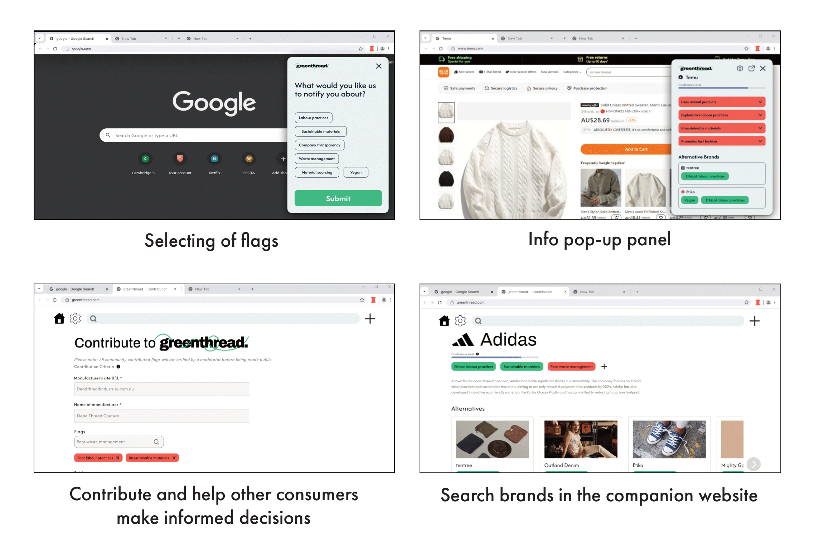
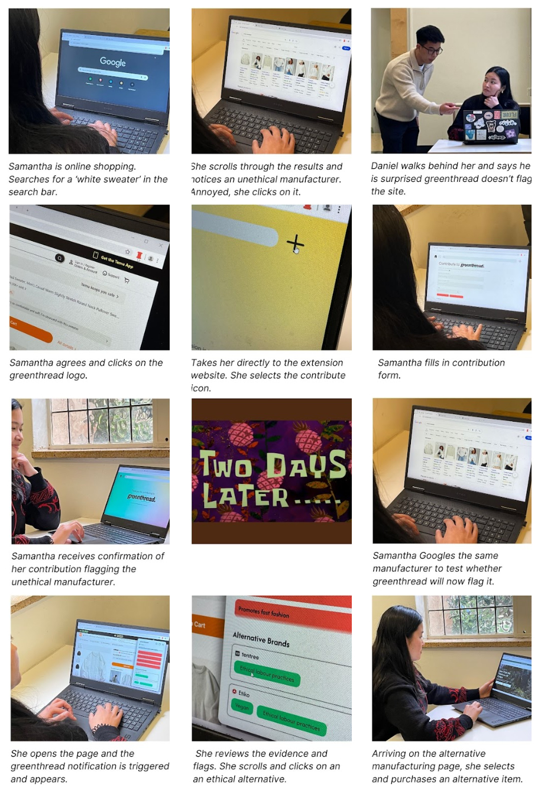
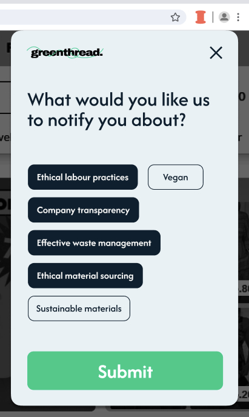
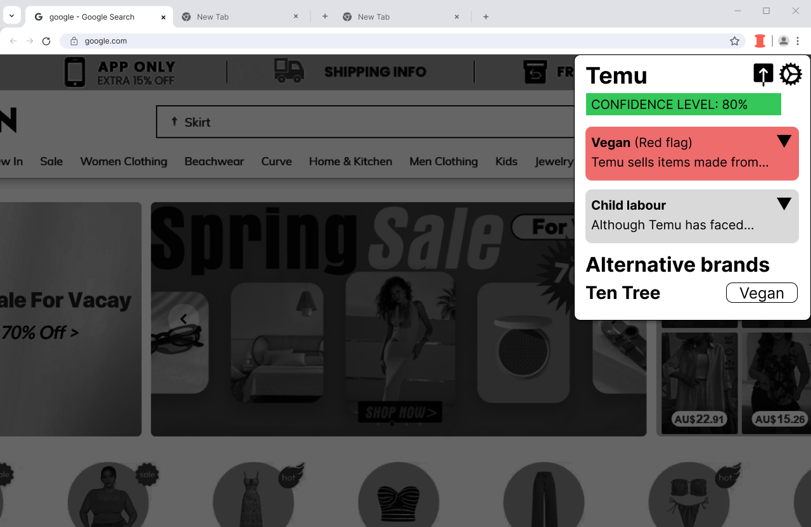
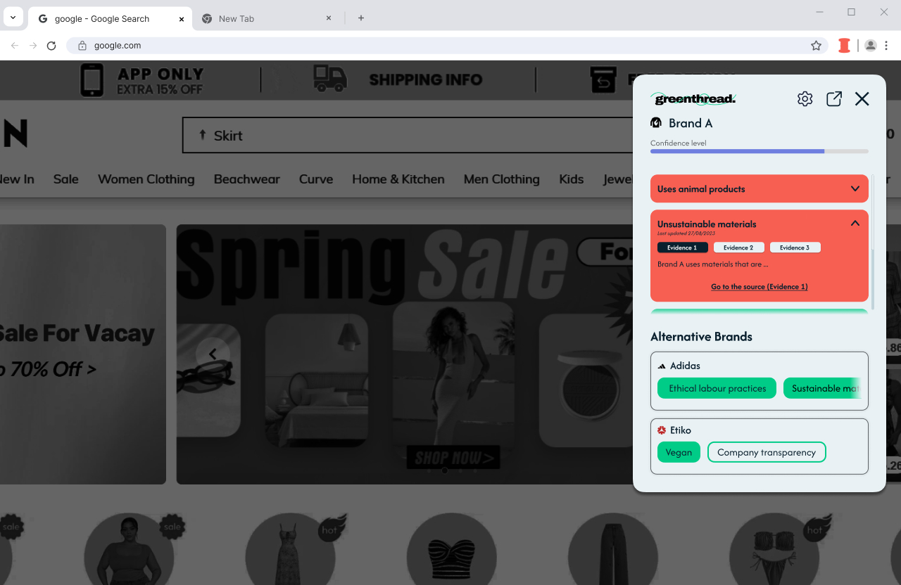

greenthread
Greenthread is a design concept for a browser extension that tackles the issue of transparency in the the fashion industry. It is primarily designed for online shoppers, but also acts as a way for clothing brands to take accountability and identify areas of improvement.
Greenthread operates by comparing the URL of the online store the user is browsing with its database, then notifying the user if the company is known to violate ethical issues that they care about, such as labour rights or using sustainable materials. It then suggests alternative brands that have better practices in regards to these issues. These claims are backed up by user-submitted evidence verified by a community moderator. Users can also search specific brands on Greenthread's database to learn more about their practices.
Various features of the extension and companion website.
Video explaining the design concept.
Walkthrough of the final high-fidelity prototype.

Storyboard detailing a user scenario for Greenthread.
research
We identified various stakeholders with an interest in the fashion industry, creating a diagram showing their different wants and motivations in order to discover key issues. Several interviews were conducted with members of stakeholder groups, including an ethically-conscious shopper, a small clothing business owner and a fashion professor from RMIT. This allowed us to develop a thorough understanding of consumer behavior, brand practices, and develop a list of issues surrounding ethics and sustainability that users could choose from.

Upon first installing the extension, users are prompted to select the social issues that they want to be notified about.
prototyping
A low-fidelity prototype was developed for the first round of usability testing, where users were asked to carry out a variety of tasks that involved using different parts of Greenthread and give their thoughts on the user experience. Key issues identified included confusing wording on interface elements and the lack of alternative methods to contribute evidence. This participant feedback was used in the development of a second higher-fidelity prototype.
- 83% of users said that they would use Greenthread or a similar product.
- All but one user felt the product would have an impact on their shopping behavior.

Initial low-fidelity prototype.

Higher-fidelity prototype.
We plan to make further improvements to the interface, such as increasing the font size to improve readability and streamlining the information panels. In order to make Greenthread a tool that encourages consumers to become more aware of brand practices, we also aim to add search filters, product categories and price range indicators to our company database. This allows shoppers to find alternative ethical fashion brands that fit their needs.
go back